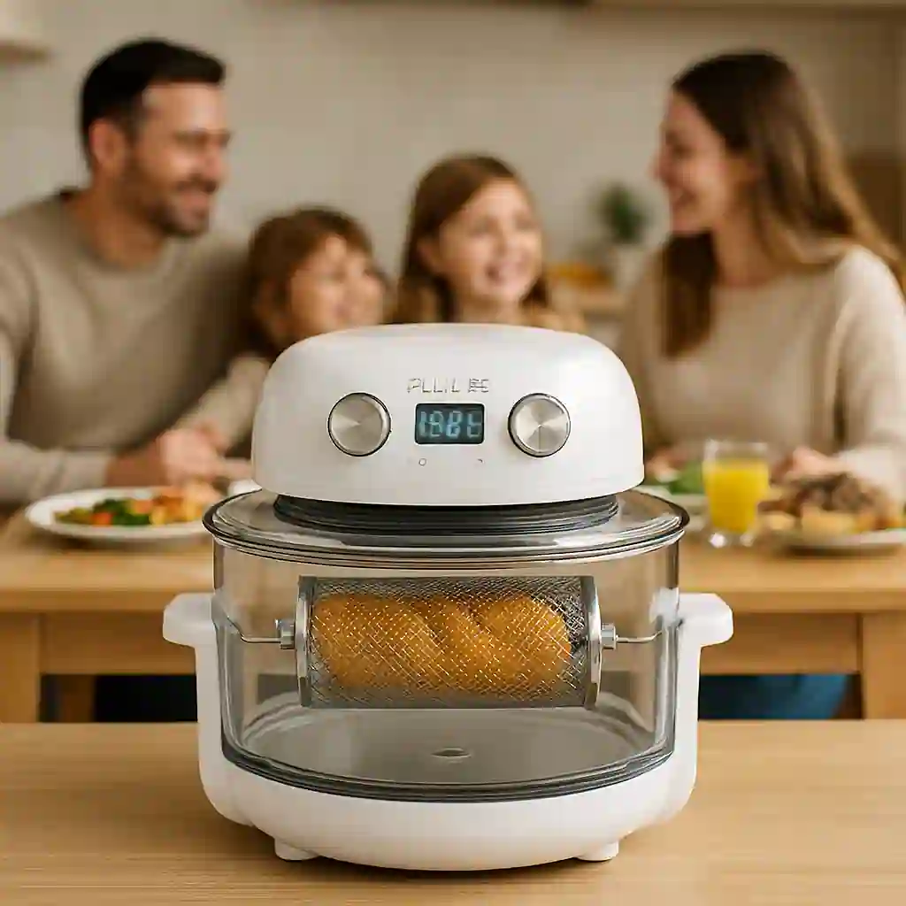
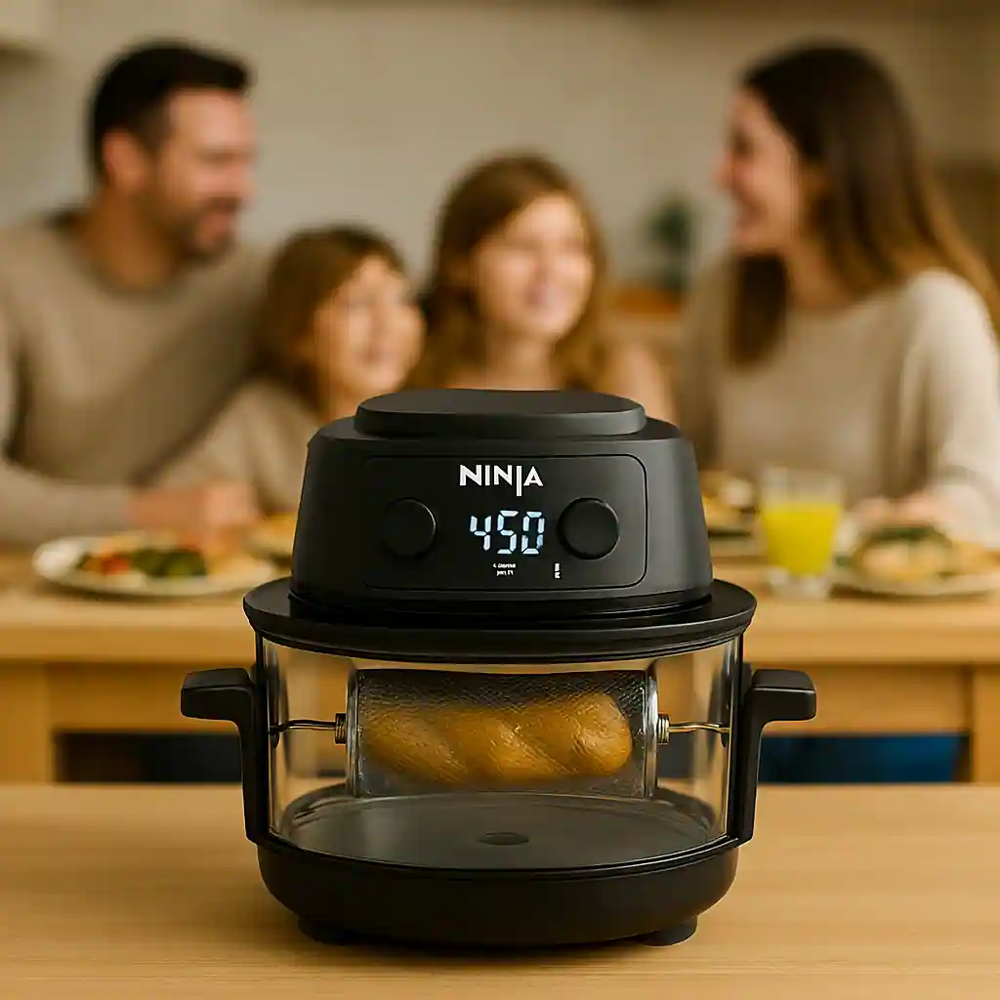
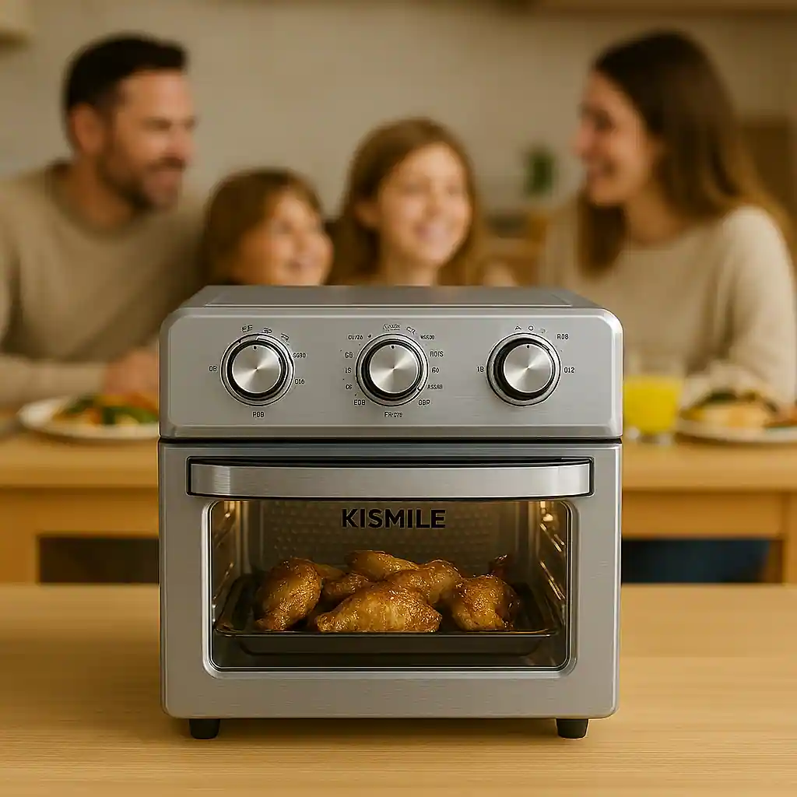

Explore Each Model in Detail

Fritaire Glass Air Fryer
Safety Score: 96 / 100
True glass + stainless, no coatings. Don’t compromise — this is the only model with verified 96/100 material safety.
Learn Why This Is the Safest Choice Secure Yours Before It Sells Out

Ninja Crispi Pro 6-in-1 Glass Air Fryer
Safety Score: 92 / 100
Glass + stainless/metal. No coatings. Versatile, powerful, and right for the health conscious: this model cannot be beaten.
Learn Why This Is the Safest Choice Secure Yours Before It Sells Out

Kismile Wonder Oven Pro
Safety Score: 90 / 100
Glass + stainless/metal. Chemical-free, durable, and easy to inspect. Only these materials ensure your family’s safety.
Learn Why This Is the Safest Choice Secure Yours Before It Sells Out